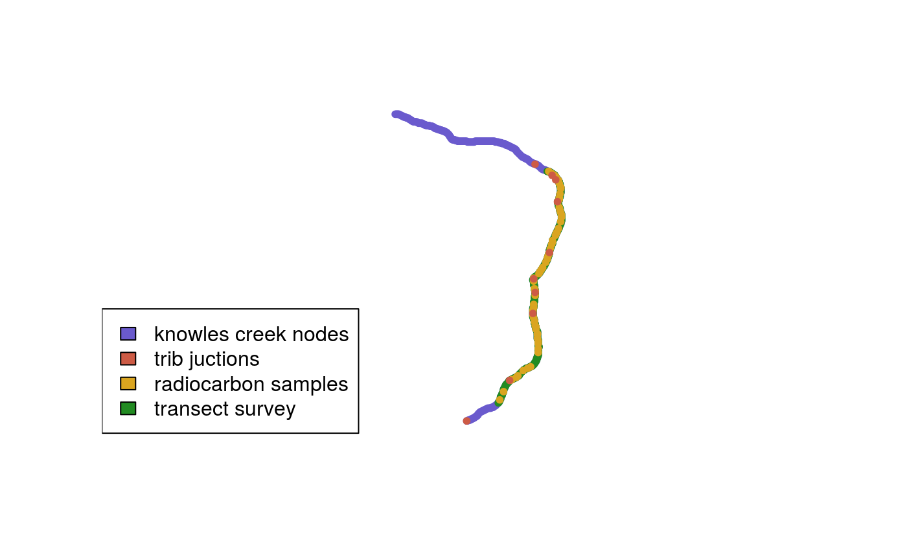
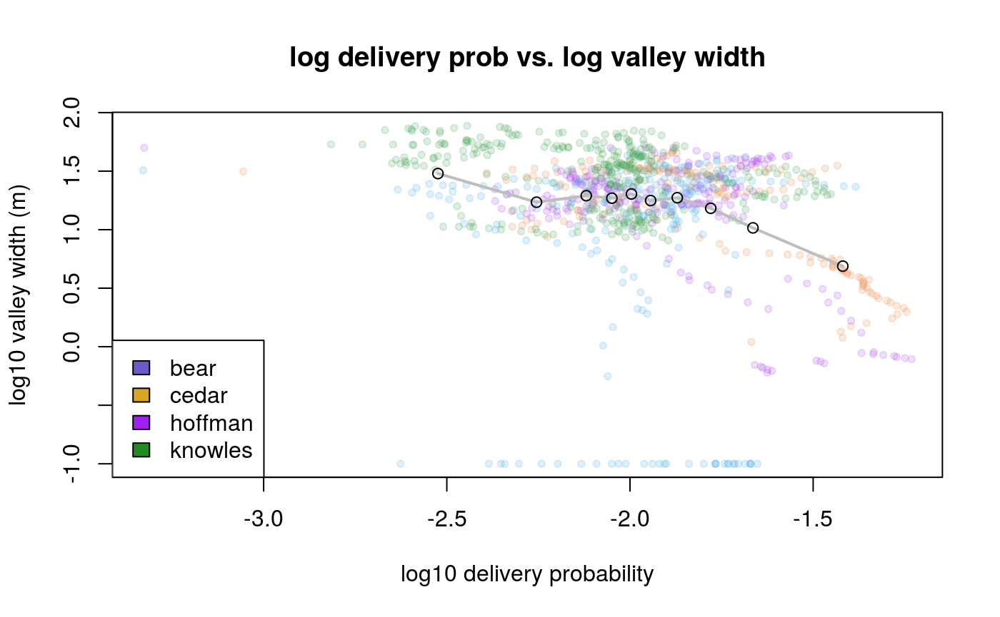

fall2019_update.RmdObjectives

Objectives
Objectives
We can fit the area-slope relation to a power law where slope \(S\) relates to contributing area \(A\) by the function:
\[ S = k_sA^{-\theta} \]
We can relate logged slope to logged contributing area using a linear model, so that:
\[ log(S) = log(k_sA^{-\theta}) \] \[ log(S) = log(k_s) - \theta log(A) \]
where \(\theta\) is the slope of a linear model with intercept \(log(k_s)\). Using the estimated \(\theta\) for all surveyed creeks, we can back-calculate an individual \(k_s\) for each channel node holding \(\theta\) constant.

Let \(P\) represent delivery probabilities, and let \(F_P (P_0)\) be the CDF of delivery probabilities. Let \(V\) represent depositional volume, and let \(F_V (P_0)\) be the CDF of volume with respect to \(P\). The volume weighting function \(wt_V\) over an interval \(P_i\) to \(P_{i + 1}\) along \(P\) is:
\[ wt_V (P_i, P_{i+1}) = \frac{F_V (P_{i+1}) - F_V (P_i)}{F_P (P_{i+1}) - F_P (P_i)} \]
Using \(K\) for the ratio of \(P/k_s\), let \(F_V(K_0)\) be the CDF of \(V\) with respect to \(P/k_s\). We can then compare change in the CDF of \(V\) to change in the CDF of \(K\). The volume weighting function \(wt_{V_K}\) over an interval \(K_i\) to \(K_{i + 1}\) along \(K\) is:
\[ wt_{V_K} (K_i, K_{i+1}) = \frac{F_V (K_{i+1}) - F_V (K_i)}{F_K (K_{i+1}) - F_K (K_i)} \]
We can follow the same procedure using top valley width, with distance \(D\) representing valley width, let \(F_D (P_0)\) be the CDF of \(D\) with respect to \(P\). The valley width weighting function \(wt_D\) over an interval \(P_i\) to \(P_{i + 1}\) along \(P\) is:
\[ wt_D (P_i, P_{i+1}) = \frac{F_D (P_{i+1}) - F_D (P_i)}{F_P (P_{i+1}) - F_P (P_i)} \]
Using \(K\) for the ratio of \(P/k_s\), let \(F_D(K_0)\) be the CDF of \(D\) with respect to \(P/k_s\). The \(D_K\) weighting function \(wt_{D_K}\) over an interval \(K_i\) to \(K_{i + 1}\) along \(K\) is:
\[ wt_{D_K} (K_i, K_{i+1}) = \frac{F_D (K_{i+1}) - F_D (K_i)}{F_K (K_{i+1}) - F_K (K_i)} \]